주택관리사보-1차 (2018-08-08 기출문제)
1과목: 민법
1. 신의성실의 원칙에 관한 설명으로 옳지 않은 것은? (다툼이 있으면 판례에 따름)
- 소멸시효에 기한 항변권 행사에도 신의칙이 적용될 수 있다.
- 계약교섭의 부당한 파기는 신의칙에 비추어 불법행위를 구성할 수 있다.
- 신의칙에 반하는 것은 당사자의 주장이 없더라도 법원이 직권으로 판단할 수 있다.
- 강행법규에 반하는 법률행위를 한 자가 스스로 강행법규 위반을 이유로 그 법률행위의 무효를 주장하는 것은 신의칙에 반한다.
- 본인의 지위를 단독상속한 무권대리인이 상속 전에 행한 무권대리행위에 대하여 본인의 지위에서 추인을 거절하는 것은 신의칙에 반한다.
(정답률: 43%)

2. 법원(法源)에 관한 설명으로 옳지 않은 것은? (다툼이 있으면 판례에 따름)
- 민사에 관한 대통령의 긴급명령은 민법의 법원이 된다.
- 민사에 관하여 법률에 규정이 없으면 관습법에 의하고 관습법이 없으면 조리에 의한다.
- 일반적으로 승인된 국제법규는 민사에 관한 것이더라도 민법의 법원이 될 수 없다.
- 관습법은 당사자의 주장ㆍ증명이 없더라도 법원(法院)이 직권으로 이를 확정할 수 있다.
- 관습법이 그 적용시점에서 전체 법질서에 부합하지 않게 된 경우, 그 관습법의 효력은 부정된다.
(정답률: 45%)
3. 민법상 권리와 의무에 관한 설명으로 옳지 않은 것은? (다툼이 있으면 판례에 따름)
- 임차인의 지상물매수청구권의 법적 성질은 형성권이다.
- 물권은 법률 또는 관습법에 의하는 외에는 임의로 창설하지 못한다.
- 인격권 침해에 대하여는 예방적 구제수단으로서 금지청구권이 인정된다.
- 주된 권리의 소멸시효가 완성한 때에는 종속된 권리에 그 효력이 미친다.
- 저당권은 1필지인 토지의 일부에도 분필하지 않은 상태로 설정할 수 있다.
(정답률: 43%)
4. 권리능력에 관한 설명으로 옳지 않은 것은? (다툼이 있으면 판례에 따름)
- 사람은 생존하는 동안 권리와 의무의 주체가 된다.
- 민법은 일정한 사항에 대하여만 예외적으로 태아가 이미 출생한 것으로 본다.
- 자연인의 권리능력은 출생이라는 사실에 의하여 취득하는 것이고, 출생신고에 의하여 취득하는 것은 아니다.
- 운전자 甲의 과실에 의한 교통사고로 母가 충격되어 태아가 사산(死産)된 경우, 母는 태아의 甲에 대한 손해배상청구권을 상속받아 甲에게 행사할 수 있다.
- 태아 乙의 출생 전에 甲의 불법행위로 乙의 父가 사망한 경우, 출생한 乙은 甲에 대하여 父의 사망에 따른 자신의 정신적 손해에 대한 배상을 청구할 수 있다.
(정답률: 45%)
5. 부재와 실종에 관한 설명으로 옳지 않은 것은? (다툼이 있으면 판례에 따름)
- 실종선고를 받은 자는 실종기간이 만료한 때에 사망한 것으로 본다.
- 부재자의 후순위 재산상속인은 선순위 재산상속인이 있는 경우에도 실종선고를 청구할 수 있다.
- 법원은 자신이 선임한 부재자의 재산관리인으로 하여금 재산의 관리 및 반환에 관하여 상당한 담보를 제공하게 할 수 있다.
- 실종기간이 만료한 때와 다른 시점에 사망한 사실이 증명되면, 법원은 이해관계인 또는 검사의 청구에 의하여 실종선고를 취소하여야 한다.
- 법원이 선임한 부재자의 재산관리인은 그 부재자의 사망이 확인된 후이더라도 그 선임결정이 취소되지 않는 한 그 권한을 상실하는 것은 아니다.
(정답률: 38%)
6. 민법상 법인의 불법행위능력에 관한 설명으로 옳지 않은 것은? (다툼이 있으면 판례에 따름)
- 청산인은 법인의 대표기관이 아니므로 그 직무에 관하여는 법인의 불법행위가 성립하지 않는다.
- 법인의 대표자가 직무에 관하여 타인에게 불법행위를 한 경우, 사용자책임에 관한 민법규정이 적용되지 않는다.
- 법인의 대표자가 직무에 관하여 타인에게 불법행위를 한 경우, 그 법인은 불법행위로 인한 손해를 배상할 책임을 진다.
- 비법인사단 대표자의 행위가 직무에 관한 행위에 해당하지 않음을 피해자가 중대한 과실로 알지 못한 경우에는 비법인사단에게 손해배상책임을 물을 수 없다.
- 법인의 목적범위 외의 행위로 인하여 타인에게 손해를 가한 때에는 그 사항의 의결에 찬성하거나 그 의결을 집행한 사원, 이사 및 기타 대표자가 연대하여 배상해야 한다.
(정답률: 36%)
7. 민법상 법인의 기관에 관한 설명으로 옳지 않은 것은? (다툼이 있으면 판례에 따름)
- 법인은 이사를 두어야 한다.
- 재단법인은 감사를 둘 수 있다.
- 법인과 이사의 이익이 상반하는 사항에 관하여 그 이사는 대표권이 없다.
- 법인의 이사는 법인의 제반 사무처리를 타인에게 포괄적으로 위임할 수 있다.
- 감사는 법인의 재산상황에 관하여 부정이 있음을 발견하면 이를 총회 또는 주무관청에 보고해야 한다.
(정답률: 35%)
8. 법인에 관한 다음 민법규정 중 비법인사단에 유추적용할 수 없는 것은? (다툼이 있으면 판례에 따름)
- 이사의 대표권에 대한 제한은 등기하지 않으면 제3자에게 대항하지 못한다.
- 사단법인의 정관은 총사원 3분의 2 이상의 동의가 있는 때에 한하여 이를 변경할 수 있다.
- 총회의 소집은 1주간 전에 그 회의의 목적사항을 기재한 통지를 발하고 기타 정관에 정한 방법에 의하여야 한다.
- 총회의 결의는 민법 또는 정관에 다른 규정이 없으면 사원 과반수의 출석과 출석사원의 결의권의 과반수로써 한다.
- 법인이 해산한 때에는 파산의 경우를 제하고는 이사가 청산인이 된다. 그러나 정관 또는 총회의 결의로 달리 정한 바가 있으면 그에 의한다.
(정답률: 24%)
9. 민법상 법인에 관한 설명으로 옳지 않은 것은?
- 법원은 법인의 청산을 감독한다.
- 법원은 중요한 사유가 있는 때에 직권으로 청산인을 해임할 수 있다.
- 정관에 다른 규정이 없는 한 사원은 서면으로 결의권을 행사할 수 없다.
- 법인이 공익을 해하는 행위를 한 때에 주무관청은 설립허가를 취소할 수 있다.
- 이사의 결원으로 인하여 손해가 생길 염려가 있는 때에는 법원은 이해관계인이나 검사의 청구에 의하여 임시이사를 선임해야 한다.
(정답률: 31%)
10. 피성년후견인에 관한 설명으로 옳은 것은?
- 가정법원은 성년후견개시의 심판을 할 때 본인의 의사를 고려할 필요가 없다.
- 가정법원은 본인 등 일정한 자의 청구 또는 직권으로 성년후견개시의 심판을 한다.
- 성년후견종료의 심판이 있으면 피성년후견인은 장래에 향하여 행위능력을 회복한다.
- 피성년후견인이 속임수로써 자기를 능력자로 믿게 한 경우에도 그 행위를 취소할 수 있다.
- 피성년후견인이 성년후견인의 동의를 얻어서 한 부동산 매도행위는 특별한 사정이 없는 한 취소할 수 없다.
(정답률: 26%)
11. 물건에 관한 설명으로 옳지 않은 것은? (다툼이 있으면 판례에 따름)
- 온천에 관한 권리도 물권이 될 수 있다.
- 물건의 사용대가로 받은 금전 기타의 물건은 법정과실이다.
- 물건이란 유체물 및 전기 기타 관리할 수 있는 자연력을 말한다.
- 독립된 부동산으로서 건물이라고 하기 위해서는 최소한 기둥과 지붕 그리고 주벽이 있어야 한다.
- 저당권이 설정된 건물이 증축된 경우, 그 증축부분이 독립성을 갖지 못하는 이상 저당권은 그 증축부분에도 효력이 미친다.
(정답률: 38%)
12. 주물과 종물에 관한 설명으로 옳지 않은 것은? (다툼이 있으면 판례에 따름)
- 주물과 별도로 종물만을 처분할 수 있다.
- 종물은 주물의 구성부분이 아닌 독립한 물건이어야 한다.
- 주물의 소유자나 이용자의 상용에 공여되고 있더라도 주물 그 자체의 효용과 직접 관계가 없는 물건은 종물이 아니다.
- 저당권이 설정된 건물의 상용에 이바지하기 위해 타인 소유의 전화설비가 부속된 경우, 저당권 효력은 그 전화설비에도 미친다.
- 건물에 대한 저당권이 실행되어 경매의 매수인이 건물소유권을 취득한 때에는 특별한 사정이 없는 한 그 건물소유를 목적으로 하는 토지의 임차권도 매수인에게 이전된다.
(정답률: 24%)
13. 승계취득에 해당하는 것은?
- 첨부
- 상속
- 건물의 신축
- 유실물의 습득
- 무주물의 선점
(정답률: 40%)
14. 甲은 자신의 X토지를 乙에게 매도하기로 약정하였다. 甲과 乙은 계약서를 작성하면서 지번을 착각하여 매매목적물을 甲소유의 Y토지로 표시하였다. 그 후 甲은 Y토지에 관하여 위 매매계약을 원인으로 하여 乙명의로 소유권이전등기를 마쳐주었다. 이에 관한 설명으로 옳은 것은? (다툼이 있으면 판례에 따름)
- 甲과 乙사이의 매매계약은 무효이다.
- Y토지에 관한 소유권이전등기는 유효하다.
- 甲은 착오를 이유로 乙과의 매매계약을 취소할 수 있다.
- 乙은 甲에게 X토지의 소유권이전등기를 청구할 수 있다.
- 甲은 乙의 채무불이행을 이유로 Y토지에 대한 매매계약을 해제할 수 있다.
(정답률: 29%)
15. 법률행위에 관한 설명으로 옳지 않은 것은?
- 유언은 요식행위이다.
- 매매계약은 채권행위이다.
- 임대차계약은 재산행위이다.
- 사용대차계약은 무상행위이다.
- 재단법인의 설립행위는 상대방 있는 단독행위이다.
(정답률: 40%)
16. 반사회질서의 법률행위로 무효인 것은? (다툼이 있으면 판례에 따름)
- 부동산에 관한 명의신탁약정
- 무허가음식점의 음식물 판매행위
- 민사사건을 수임하는 변호사의 성공보수 약정
- 수사기관에서 허위진술을 하는 대가로 금전을 받기로 한 약정
- 부동산의 강제집행을 면할 목적으로 한 허위의 근저당권설정계약
(정답률: 36%)
17. 甲의 대리인 乙은 본인을 위한 것임을 표시하고 그 권한 내에서 丙과 甲소유의 건물에 대한 매매계약을 체결하였다. 다음 중 甲과 丙사이에 매매계약의 효력이 발생하는 경우는? (다툼이 있으면 판례에 따름)
- 乙이 의사무능력 상태에서 丙과 계약을 체결한 경우
- 乙과 丙이 통정한 허위의 의사표시로 계약을 체결한 경우
- 乙이 대리권을 남용하여 계약을 체결하고 丙이 이를 안 경우
- 甲이 乙과 丁으로 하여금 공동대리를 하도록 했는데, 乙이 단독의 의사결정으로 계약하였고 丙이 이러한 제한을 안 경우
- 乙의 대리권이 소멸하였으나 이를 과실 없이 알지 못한 채 계약을 체결한 丙이 甲에게 건물의 소유권이전등기를 청구한 경우
(정답률: 30%)
18. 의사표시의 효력발생에 관하여 발신주의를 따르는 것을 모두 고른 것은?
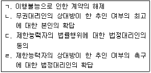
- ㄱ, ㄴ
- ㄴ, ㄷ
- ㄴ, ㄹ
- ㄷ, ㄹ
- ㄱ, ㄷ, ㄹ
(정답률: 26%)
19. 표현대리에 관한 설명으로 옳은 것은? (다툼이 있으면 판례에 따름)
- 대리행위가 강행법규에 위반하여 무효이더라도 표현대리의 법리가 적용될 수 있다.
- 표현대리가 성립하는 경우, 과실상계의 법리를 유추적용하여 본인의 책임을 경감할 수 없다.
- 유권대리의 주장 속에는 무권대리에 속하는 표현대리의 주장이 포함되어 있다고 볼 수 있다.
- 대리권소멸 후의 표현대리에 관한 규정은 법정대리인의 대리권소멸에 관하여 적용되지 않는다.
- 대리권소멸 후 선임된 복대리인의 대리행위에 대하여는 대리권소멸 후 표현대리가 성립할 수 없다.
(정답률: 26%)
20. 甲은 자신의 부동산을 乙에게 매도하였다. 이에 관한 설명으로 옳지 않은 것은? (다툼이 있으면 판례에 따름)
- 착오로 인한 의사표시 취소에 관한 민법규정의 적용을 배제하는 甲과 乙의 약정은 유효하다.
- 甲이 착오에 빠졌으나 경제적인 불이익을 입지 않았다면 이는 중요부분의 착오라고 할 수 없다.
- 甲과 乙사이의 계약이 반사회적 법률행위에 해당하는 경우, 추인에 의해서도 계약이 유효로 될 수 없다.
- 甲과 乙사이의 계약이 통정허위표시인 경우, 乙은 甲에게 채무불이행으로 인한 손해배상을 청구할 수 있다.
- 乙의 대리인 丙이 甲을 기망하여 甲과 계약을 체결한 경우, 乙이 丙의 기망사실을 알 수 없었더라도 甲은 사기를 이유로 계약을 취소할 수 있다.
(정답률: 26%)
21. 소멸시효에 관한 설명으로 옳지 않은 것은? (다툼이 있으면 판례에 따름)
- 지상권은 20년간 행사하지 않으면 소멸시효가 완성한다.
- 시효중단사유가 종료한 때로부터 소멸시효는 새로이 진행한다.
- 부작위를 목적으로 한 채권의 소멸시효는 계약체결시부터 진행한다.
- 최고가 있은 후 6개월 내에 압류 또는 가압류를 하면 그 최고는 시효중단의 효력이 있다.
- 매도인의 소유권이전채무가 이행불능이 된 경우, 매수인의 손해배상채권의 소멸시효는 그 채무가 이행불능이 된 때부터 진행한다.
(정답률: 29%)
22. 조건과 기한에 관한 설명으로 옳지 않은 것은? (다툼이 있으면 판례에 따름)
- 기한은 채권자의 이익을 위한 것으로 추정한다.
- 종기 있는 법률행위는 기한이 도래한 때로부터 그 효력을 잃는다.
- 조건을 붙이는 것이 허용되지 않는 법률행위에 조건을 붙인 경우, 그 법률행위 전부가 무효이다.
- 조건이 법률행위 당시에 이미 성취할 수 없는 경우, 그 조건이 정지조건이면 그 법률행위는 무효이다.
- 정지조건부 법률행위에서 조건성취의 사실에 대한 증명책임은 조건성취로 인한 권리취득을 주장하는 자에게 있다.
(정답률: 30%)
23. 법률행위의 무효와 취소에 관한 설명으로 옳지 않은 것은? (다툼이 있으면 판례에 따름)
- 취소된 법률행위는 특별한 사정이 없는 한 취소한 이후부터 무효이다.
- 취소권은 추인할 수 있는 날로부터 3년 내에, 법률행위를 한 날로부터 10년 내에 행사하여야 한다.
- 토지거래허가구역 내의 토지거래계약이 처음부터 허가를 배제하는 내용인 경우에는 확정적 무효이다.
- 취소할 수 있는 법률행위의 상대방이 확정된 경우, 그 취소는 그 상대방에 대한 의사표시로 하여야 한다.
- 무권리자 甲이 乙의 권리를 자기 이름으로 처분한 경우, 乙이 추인하면 그 처분행위의 효력은 乙에게 미친다.
(정답률: 35%)
24. 소멸시효에 관한 설명으로 옳은 것은? (다툼이 있으면 판례에 따름)
- 소멸시효는 당사자의 합의에 의하여 단축할 수 없으나 연장할 수는 있다.
- 법원은 어떤 권리의 소멸시효기간이 얼마나 되는지를 직권으로 판단할 수 없다.
- 연대채무자 중 한 사람에 대한 이행청구는 다른 연대채무자에 대하여도 시효중단의 효력이 있다.
- 재판상 청구는 소송이 각하된 경우에는 시효중단의 효력이 없으나, 기각된 경우에는 시효중단의 효력이 있다.
- 주채무가 민사채무이고 보증채무는 상행위로 인한 것일 경우, 보증채무는 주채무에 따라 10년의 소멸시효에 걸린다.
(정답률: 26%)
25. 부동산등기에 관한 설명으로 옳지 않은 것은? (다툼이 있으면 판례에 따름)
- 멸실된 건물의 소유권등기는 그 대지에 신축한 건물의 등기로 유용할 수 없다.
- 증여에 의하여 취득한 부동산의 등기원인을 매매로 기재하였더라도 소유권이전등기는 유효하다.
- 乙이 甲소유 미등기건물을 매수한 뒤 甲과의 합의에 따라 직접 자기명의로 보존등기한 경우, 그 등기는 무효이다.
- 등기가 원인 없이 말소된 경우, 그 회복등기가 마쳐지기 전이라도 말소된 등기의 명의인은 적법한 권리자로 추정된다.
- 소유권이전청구권 보전을 위한 가등기가 있어도, 소유권이전등기를 청구할 어떤 법률관계가 있다고 추정되지 않는다.
(정답률: 22%)
26. 물권의 취득을 위하여 등기가 필요한 경우를 모두 고른 것은? (다툼이 있으면 판례에 따름)
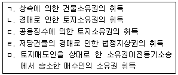
- ㅁ
- ㄱ, ㄷ
- ㄴ, ㄹ
- ㄹ, ㅁ
- ㄱ, ㄴ, ㄷ
(정답률: 25%)
27. 점유권에 관한 설명으로 옳지 않은 것은? (다툼이 있으면 판례에 따름)
- 점유권에 기한 소는 본권에 관한 이유로 재판하지 못한다.
- 점유자는 소유의 의사로 선의, 평온 및 공연하게 점유한 것으로 추정한다.
- 점유의 권리 적법추정에 관한 규정은 등기된 부동산에는 적용되지 않는다.
- 공사로 인하여 점유를 방해받은 경우, 그 공사가 완성되기 전이라면 공사착수 후 1년이 경과하였더라도 방해제거를 청구할 수 있다.
- 전(前)점유자의 점유가 타주점유라 하여도 전(前)점유자의 특정승계인인 현점유자가 자기의 점유만을 주장하는 경우, 현점유자의 점유는 자주점유로 추정된다.
(정답률: 26%)
28. 甲소유의 토지에 관하여 乙이 점유취득시효를 완성하였다. 시효완성 후에 丙이 甲으로부터 그 토지를 매수하여 소유권이전등기를 마친 뒤 1년이 지난 상태이다. 이에 관한 설명으로 옳은 것을 모두 고른 것은? (다툼이 있으면 판례에 따름)
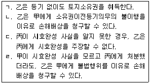
- ㄷ
- ㄹ
- ㄱ, ㄴ
- ㄱ, ㄷ
- ㄴ, ㄹ
(정답률: 27%)
29. 관습상 법정지상권에 관한 설명으로 옳은 것은? (다툼이 있으면 판례에 따름)
- 무허가건물을 위해서는 관습상 법정지상권이 성립할 여지가 없다.
- 국세징수법에 의한 공매로 인하여 대지와 건물의 소유자가 달라지는 경우에는 관습상 법정지상권이 성립하지 않는다.
- 건물만을 매수하면서 그 대지에 관한 임대차계약을 체결했더라도, 특별한 사정이 없는 한 관습상 법정지상권을 포기한 것으로 볼 수 없다.
- 토지와 그 지상건물이 처음부터 동일인 소유가 아니었더라도 그 중 어느 하나를 처분할 당시에 동일인 소유에 속했다면, 관습상 법정지상권이 성립할 수 있다.
- 甲으로부터 그 소유 대지와 미등기 지상건물을 양수한 乙이 대지에 관하여서만 소유권이전등기를 넘겨받은 상태에서 丙에게 대지를 매도하여 소유권을 이전한 경우, 乙은 관습상 법정지상권을 취득한다.
(정답률: 27%)
30. 전세권에 관한 설명으로 옳지 않은 것은? (다툼이 있으면 판례에 따름)
- 전세권은 용익물권적 성질과 담보물권적 성질을 겸유하고 있다.
- 전세권설정자는 목적물의 현상을 유지하고 그 통상의 관리에 속한 수선을 하여야 한다.
- 전세금은 반드시 현실적으로 수수되어야만 하는 것은 아니고, 기존의 채권으로 전세금의 지급에 갈음할 수 있다.
- 전세권이 존속기간 만료 등으로 종료한 경우, 전세권의 용익물권적 권능은 전세권설정등기의 말소 없이도 당연히 소멸한다.
- 타인의 토지에 있는 건물에 전세권을 설정한 경우, 전세권의 효력은 그 건물의 소유를 목적으로 한 지상권 또는 임차권에 미친다.
(정답률: 27%)
31. 유치권에 관한 설명으로 옳지 않은 것은? (다툼이 있으면 판례에 따름)
- 유치권에는 물상대위성이 인정되지 않는다.
- 당사자가 미리 유치권 발생을 배제하는 특약을 한 경우, 유치권은 발생하지 않는다.
- 유치권에 의하여 담보되고 있는 채권의 소멸시효는 유치권 행사 시점부터 중단된다.
- 유치권자의 점유가 간접점유이고 채무자가 직접점유자인 경우, 유치권은 성립하지 않는다.
- 유치권자는 유치목적물을 경매로 매각받은 자에게 그 피담보채권의 변제를 청구할 수 없다.
(정답률: 22%)
32. 저당권에 관한 설명으로 옳은 것은? (다툼이 있으면 판례에 따름)
- 지상권은 저당권의 목적으로 하지 못한다.
- 저당권은 그 담보한 채권과 분리하여 타인에게 양도할 수 있다.
- 제3자가 저당목적물의 변형물을 이미 압류한 경우, 저당권자는 스스로 압류하지 않더라도 물상대위권을 행사할 수 있다.
- 저당부동산에 대하여 지상권을 취득한 제3자는 저당권자에게 그 부동산으로 담보된 채권을 변제하더라도 저당권의 소멸을 청구할 수 없다.
- 근저당권의 피담보채권의 확정 전에 발생한 원본채권에 관하여 확정 후에 발생하는 이자나 지연손해금 채권은 채권최고액의 범위 내에 있더라도 그 근저당권에 의하여 담보되지 않는다.
(정답률: 19%)
33. 이행지체에 관한 설명으로 옳지 않은 것은? (다툼이 있으면 판례에 따름)
- 이행지체를 이유로 한 계약의 해제는 손해배상의 청구에 영향을 미치지 않는다.
- 불법행위로 인한 손해배상채무의 지연손해금 기산일은 채무이행을 통지 받은 때이다.
- 채무이행의 기한이 없는 경우, 채무자는 이행청구를 받은 다음 날부터 지체책임이 있다.
- 채무자는 자기에게 과실이 없는 경우에도 원칙적으로 이행지체 중에 생긴 손해를 배상하여야 한다.
- 동시이행관계에 있는 채무의 이행기가 도래하였더라도 상대방이 이행제공을 하지 않는 한 이행지체가 성립하지 않는다.
(정답률: 16%)
34. 면책적 채무인수에 관한 설명으로 옳은 것은?
- 인수인은 전(前)채무자의 항변할 수 있는 사유로 채권자에게 대항할 수 있다.
- 전(前)채무자의 채무에 대한 보증이나 제3자가 제공한 담보는 채무인수가 있더라도 원칙적으로 소멸하지 않는다.
- 채무인수는 채무자에게 불리한 것이 아니므로 이해관계 없는 제3자도 채무자의 의사에 반하여 채무를 인수할 수 있다.
- 제3자와 채무자 사이의 계약에 의한 채무인수를 채권자가 승낙한 경우, 당사자는 임의로 채무인수의 의사표시를 철회할 수 있다.
- 제3자가 채무자와의 계약으로 채무를 인수한 경우, 채권자가 이를 승낙하면 특별한 사정이 없는 한 그 승낙의 의사표시를 한 때부터 채무인수의 효력이 생긴다.
(정답률: 18%)
35. 도급에 관한 설명으로 옳지 않은 것은? (다툼이 있으면 판례에 따름)
- 수급인의 완성물인도의무와 도급인의 보수지급의무는 원칙적으로 동시이행관계에 있다.
- 완성된 건물에 하자가 있는 경우, 계약목적을 달성할 수 없더라도 도급인은 계약을 해제할 수 없다.
- 수급인이 일을 완성하기 전에는 도급인은 수급인이 입게 될 손해를 배상하고 계약을 해제할 수 있다.
- 완성된 목적물의 하자가 중요하지 않고 그 보수에 과다한 비용을 요할 때에는 하자의 보수를 청구할 수 없다.
- 수급인의 공사대금이 도급인의 손해배상채권액을 현저히 초과하더라도, 도급인은 공사대금 전액에 대하여 하자에 갈음한 손해배상채권에 기하여 동시이행항변권을 행사할 수 있다.
(정답률: 20%)
36. 계약의 해제에 관한 설명으로 옳지 않은 것은? (다툼이 있으면 판례에 따름)
- 계약해제에 따라 원상회복을 하는 경우, 그 이익반환의 범위는 특단의 사유가 없으면 받은 이익의 전부이다.
- 매매계약이 무효인 경우, 매매대금의 반환에 대하여는 해제에 관한 규정이 유추적용되어 법정이자가 가산된다.
- 계약이 해제된 경우, 계약해제 이전에 해제로 인하여 소멸되는 채권을 양수한 자는 제3자로서 보호되지 않는다.
- 매매계약 해제에 따른 원상회복의무의 이행으로서 이미 지급한 매매대금의 반환을 구하는 경우, 과실상계는 적용되지 않는다.
- 권리가 전부 타인에게 속하여 그 권리를 이전받지 못한 매수인이 계약을 해제한 경우, 매도인은 매수인에게서 받은 대금에 법정이자를 가산하여 반환하여야 한다.
(정답률: 13%)
37. 매매계약에 관한 설명으로 옳지 않은 것은?
- 매매계약은 쌍무ㆍ유상의 계약이다.
- 변제기에 도달하지 않은 채권의 매도인이 채무자의 자력을 담보한 때에는 변제기의 자력을 담보한 것으로 추정한다.
- 매도인은 담보책임면제의 특약을 한 경우에도 제3자에게 권리를 설정 또는 양도한 행위에 대하여는 책임을 면하지 못한다.
- 매매목적물이 전세권의 목적이 된 경우, 선의의 매수인은 이로 인하여 계약의 목적을 달성할 수 없으면 계약을 해제할 수 있다.
- 타인의 권리매매에서 매도인이 그 권리를 취득하여 매수인에게 이전할 수 없는 경우, 계약 당시에 그 사실을 안 매수인은 계약을 해제할 수 없다.
(정답률: 15%)
38. 임차인의 유익비상환청구권에 관한 설명으로 옳지 않은 것은? (다툼이 있으면 판례에 따름)
- 임차인은 임대차가 종료하기 전에는 유익비 상환을 청구할 수 없다.
- 임대인은 임차인의 선택에 따라 지출한 금액이나 가치증가액을 상환하여야 한다.
- 유익비상환청구권은 임대인이 목적물을 반환받은 날로부터 6개월 내에 행사하여야 한다.
- 임대인에게 비용 상환을 요구하지 않기로 약정한 경우, 임차인은 유익비 상환을 청구할 수 없다.
- 임대인이 유익비를 상환하지 않으면, 임차인은 특별한 사정이 없는 한 임대차 종료 후 임차목적물의 반환을 거절할 수 있다.
(정답률: 19%)
39. 위임에 관한 설명으로 옳지 않은 것은?
- 위임계약은 각 당사자가 언제든지 해지할 수 있다.
- 복위임은 위임인이 승낙한 경우나 부득이한 경우에만 허용된다.
- 수임인은 위임이 종료한 때에는 지체 없이 그 전말을 위임인에게 보고하여야 한다.
- 위임이 무상인 경우, 수임인은 선량한 관리자의 주의의무로써 위임사무를 처리해야 한다.
- 당사자 일방이 상대방의 불리한 시기에 위임계약을 해지하는 경우, 부득이한 사유가 있더라도 그 손해를 배상해야 한다.
(정답률: 26%)
40. 甲회사에 근무하는 乙은 甲의 관리감독 부실을 이용하여 그 직무와 관련하여 제3자 丙과 공동으로 丁을 상대로 불법행위를 하였고 그로 인해 丁에게 1억원의 손해를 입혔다. 이에 관한 설명으로 옳지 않은 것은? (다툼이 있으면 판례에 따름)
- 丁은 동시에 乙과 丙에게 1억원의 손해배상을 청구할 수 있다.
- 丁은 乙과 丙에게 각각 5천만원의 손해배상을 청구할 수 있다.
- 丁은 甲과 乙에게 각각 5천만원의 손해배상을 청구할 수 있다.
- 甲이 丁에게 1억원의 손해 전부를 배상한 경우, 甲은 乙에게 구상할 수 있다.
- 丁이 丙에게 손해배상채무 중 5천만원을 면제해 준 경우, 丁은 乙에게 5천만원을 한도로 손해배상을 청구할 수 있다.
(정답률: 27%)
2과목: 회계원리
41. 현금흐름표상 재무활동 현금흐름에 속하지 않는 것은?
- 토지 취득에 따른 현금유출
- 단기차입에 따른 현금유입
- 주식 발행에 따른 현금유입
- 회사채 발행에 따른 현금유입
- 장기차입금 상환에 따른 현금유출
(정답률: 24%)
42. 다음은 (주)한국이 보유하고 있는 자산이다. (주)한국의 현금및현금성자산은?
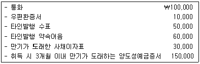
- ￦190,000
- ￦280,000
- ￦290,000
- ￦340,000
- ￦400,000
(정답률: 27%)
43. (주)한국은 20×1년 11월 1일 (주)대한의 보통주 100주를 ￦600,000에 취득하고 수수료 ￦10,000을 현금으로 지급하였다. (주)한국은 취득한 보통주를 당기손익-공정가치 측정 금융자산으로 분류하였으며, 20×1년 말 (주)대한의 보통주 공정가치는 주당 ￦5,000이었다. (주)한국이 20×2년 5월 10일 (주)대한의 주식 전부를 주당 ￦5,600에 처분한 경우 20×2년도 당기순이익에 미치는 영향은?
- ￦40,000 감소
- ￦60,000 증가
- ￦80,000 증가
- ￦100,000 감소
- ￦110,000 감소
(정답률: 21%)
44. (주)한국은 20×1년 7월 1일 거래처에 상품을 판매하고 이자부약속어음(액면금액 ￦480,000, 연 5%, 만기 5개월)을 수령하였다. (주)한국은 동 어음을 2개월 동안 보유 후 거래은행에 연 8%의 이자율로 할인하였다. 어음할인 시 인식해야 할 처분손실은? (단, 어음할인은 금융자산의 제거요건을 충족하며, 이자는 월할계산한다.)
- ￦3,800
- ￦6,000
- ￦12,400
- ￦13,600
- ￦19,600
(정답률: 17%)
45. (주)한국의 20×1년 말 손상평가 전 매출채권의 총 장부금액은 ￦220,000이고, 손실충당금 잔액은 ￦5,000이다. (주)한국이 20×1년 말에 인식해야 할 손상차손(환입)은? (단, 기대신용손실을 산정하기 위해 다음의 충당금 설정률표를 이용한다.)
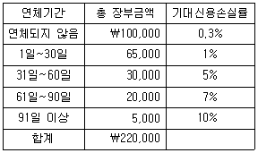
- 손상차손 ￦650
- 손상차손 ￦4,350
- 손상차손환입 ￦650
- 손상차손환입 ￦950
- 손상차손환입 ￦4,350
(정답률: 20%)
46. (주)한국은 20×1년 초 공장 신축공사(공사기간 3년, 계약금액 ￦8,000,000)를 수주하였으며, 공사 관련 자료는 다음과 같다. (주)한국이 20×2년도에 인식할 공사이익은? (단, 수익은 진행기준으로 인식하며, 진행률은 발생한 누적계약원가에 기초하여 측정한다.)
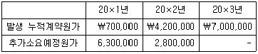
- ￦350,000
- ￦500,000
- ￦600,000
- ￦800,000
- ￦850,000
(정답률: 10%)
47. 임직원에게 급여를 지급하면서 근로소득세와 4대 보험 등을 일시적으로 원천징수하였을 경우 사용하는 계정과목은?
- 선급금
- 미수금
- 가수금
- 선수금
- 예수금
(정답률: 27%)
48. 다음은 (주)한국의 20×1년 말 재고자산(상품) 관련 자료이다. (주)한국의 재고자산평가손실은? (단, 기초재고는 없으며, 단위원가 계산은 총평균법을 따른다.)
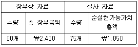
- ￦30
- ￦150
- ￦400
- ￦550
- ￦600
(정답률: 15%)
49. (주)한국은 20×1년 1월 1일에 업무용 차량(취득원가 ￦500,000, 내용연수 5년, 잔존가치 ￦50,000)을 취득하여 연수합계법으로 감가상각하였다. (주)한국은 20×2년 초 동 차량의 잔존내용연수를 3년, 잔존가치를 ￦20,000으로 추정하여 변경하였으며, 동시에 감가상각방법을 정액법으로 변경하였다. 이러한 변경이 정당한 회계변경에 해당할 경우, (주)한국이 20×2년도에 인식할 동 차량의 감가상각비는? (단, 원가모형을 적용한다.)
- ￦110,000
- ￦125,000
- ￦130,000
- ￦145,000
- ￦150,000
(정답률: 17%)
50. 재무정보의 질적 특성 중 목적적합성에 관한 설명으로 옳지 않은 것은?
- 재무정보가 예측가치를 갖기 위해서는 그 자체가 예측치 또는 예상치이어야 한다.
- 목적적합한 재무정보는 정보이용자의 의사결정에 차이가 나도록 할 수 있다.
- 재무정보가 과거 평가에 대해 피드백을 제공한다면 확인가치를 갖는다.
- 정보가 누락되거나 잘못 기재된 경우 특정 보고기업의 재무정보에 근거한 정보이용자의 의사결정에 영향을 줄 수 있다면 그 정보는 중요한 것이다.
- 재무정보의 예측가치와 확인가치는 상호 연관되어 있다.
(정답률: 22%)
51. 포괄손익계산서에 표시될 수 없는 것은?
- 영업이익
- 지분법손실
- 중단영업손실
- 법인세비용
- 선수수익
(정답률: 23%)
52. 다음은 (주)한국의 20×1년 말 재무상태표 자료이다. (주)한국의 20×1년 말 이익잉여금은?
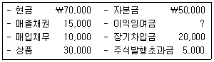
- ￦20,000
- ￦25,000
- ￦30,000
- ￦35,000
- ￦40,000
(정답률: 11%)
53. (주)한국은 20×1년 말 사용 중인 기계장치에 대하여 자산손상을 시사하는 징후가 있는지 검토한 결과, 자산손상 징후를 발견하였다. 다음 자료를 이용하여 계산한 기계장치의 손상차손은? (단, 원가모형을 적용한다.)
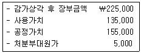
- ￦65,000
- ￦70,000
- ￦75,000
- ￦90,000
- ￦95,000
(정답률: 20%)
54. (주)한국은 20×1년 4월 1일에 기계장치(취득원가 ￦1,200,000, 내용연수 5년, 잔존가치 ￦0)를 취득하여 연수합계법으로 감가상각하였다. 20×2년 말 기계장치의 감가상각누계액은? (단, 원가모형을 적용하며, 감가상각은 월할상각한다.)
- ￦100,000
- ￦240,000
- ￦320,000
- ￦640,000
- ￦690,000
(정답률: 22%)
55. (주)한국은 20×1년 초 토지를 ￦100,000에 취득하였으며 재평가모형을 적용하여 매년 말 재평가하고 있다. 토지의 공정가치가 다음과 같을 때 20×2년도 당기이익으로 인식할 금액은?
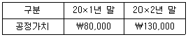
- ￦0
- ￦20,000
- ￦30,000
- ￦50,000
- ￦100,000
(정답률: 16%)
56. 유형자산의 감가상각에 관한 설명으로 옳지 않은 것은?
- 감가상각은 자산이 사용가능한 때부터 시작한다.
- 감가상각방법은 자산의 미래경제적효익이 소비될 것으로 예상되는 형태를 반영한다.
- 감가상각방법의 변경은 회계정책의 변경으로 회계처리한다.
- 감가상각대상금액을 내용연수 동안 체계적으로 배부하기 위해 다양한 방법을 사용할 수 있다.
- 잔존가치와 내용연수의 변경은 회계추정의 변경으로 회계처리한다.
(정답률: 22%)
57. 다음은 (주)한국의 20×1년 상품(원가) 관련 자료이다. (주)한국의 20×1년 기말재고자산은?
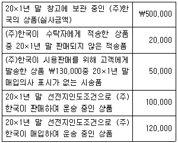
- ￦570,000
- ￦620,000
- ￦690,000
- ￦720,000
- ￦770,000
(정답률: 24%)
58. (주)한국은 A은행으로부터 ￦2,000,000(3년 만기)을 차입하여 만기가 도래한 B은행 차입금 ￦1,000,000을 즉시 상환하고 잔액은 현금으로 보유하고 있다. 동 차입 및 상환 거래가 유동비율과 부채비율에 미치는 영향은? (단, 자본은 ￦0보다 크다.)(순서대로 유동비율 / 부채비율)
- 증가 / 증가
- 증가 / 감소
- 감소 / 증가
- 감소 / 감소
- 증가 / 불변
(정답률: 15%)
59. 다음 상품 관련 자료를 이용하여 계산한 매출액은?
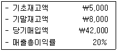
- ￦31,200
- ￦39,000
- ￦46,800
- ￦48,750
- ￦56,250
(정답률: 13%)
60. (주)한국은 20×1년 12월 1일 ￦1,000,000의 상품을 신용조건(5/10, n/60)으로 매입하였다. (주)한국이 20×1년 12월 9일에 매입대금을 전액 현금 결제한 경우의 회계처리는? (단, 상품매입 시 총액법을 적용하며, 실지재고조사법으로 기록한다.)
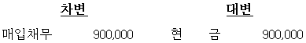
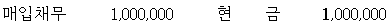
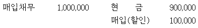
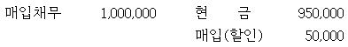
(정답률: 24%)
61. 자산을 증가시키면서 동시에 수익을 발생시키는 회계거래는?
- 상품판매계약을 체결하고 계약금을 수령하였다.
- 은행으로부터 설비투자자금을 차입하였다.
- 건물에 대한 화재보험계약을 체결하고 1년분 보험료를 선급하였다.
- 전기에 외상으로 매입한 상품 대금을 현금으로 지급하였다.
- 경영컨설팅 용역을 제공하고 그 대금은 외상으로 하였다.
(정답률: 20%)
62. (주)한국의 20×1년 초 미지급임차료 계정잔액은 ￦1,500이었다. 20×1년 말 수정후시산표상 임차료 관련 계정잔액이 다음과 같을 때, (주)한국이 임차와 관련하여 20×1년도에 지급한 현금 총액은?
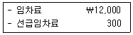
- ￦12,300
- ￦12,800
- ￦13,500
- ￦13,800
- ￦14,300
(정답률: 26%)
63. 다음 수정분개의 누락이 재무제표에 미치는 영향으로 옳은 것은?
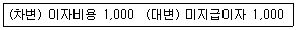
- 비용, 부채, 자본이 과대 표시된다.
- 비용, 부채, 자본이 과소 표시된다.
- 비용, 자본이 과대 표시되고 부채는 과소 표시된다.
- 비용, 자본이 과소 표시되고 부채는 과대 표시된다.
- 비용, 부채가 과소 표시되고 자본은 과대 표시된다.
(정답률: 18%)
64. 다음 회계연도로 잔액이 이월되지 않는 계정과목은?
- 이익잉여금
- 유형자산처분이익
- 미지급비용
- 감가상각누계액
- 자본금
(정답률: 23%)
65. (주)한국은 20×1년 초 임대목적으로 건물(취득원가 ￦1,000,000, 내용연수 10년, 잔존가치 ￦100,000, 정액법 상각)을 취득하여 공정가치모형을 적용하였다. 20×1년 12월 31일 건물의 공정가치가 ￦1,000,000일 경우 당기순이익에 미치는 영향은?
- ￦0
- ￦90,000 증가
- ￦90,000 감소
- ￦100,000 증가
- ￦100,000 감소
(정답률: 12%)
66. (주)한국은 20×1년 1월 1일 사채(액면금액 ￦100,000, 3년 만기 일시상환)를 발행하고, 상각후원가로 측정하였다. 액면이자는 연 5%로 매년 말 지급조건이며, 발행 당시 유효이자율은 연 8%이다. 20×3년 1월 1일 사채를 액면금액으로 조기상환하였을 경우, 사채상환손익은? (단, 금액은 소수점 첫째자리에서 반올림하며, 단수차이가 있으면 가장 근사치를 선택한다.)
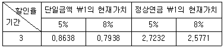
- ￦2,219 이익
- ￦2,781 손실
- ￦2,781 이익
- ￦7,734 손실
- ￦7,734 이익
(정답률: 12%)
67. (주)한국은 20×1년 10월 1일 기계장치(잔존가치 ￦1,000, 내용연수 5년, 정액법 상각)를 ￦121,000에 현금으로 취득하면서 기계장치를 소모품비로 잘못 기입하였다. 20×1년 결산 시 장부를 마감하기 전에 동 오류를 확인한 경우, 필요한 수정분개는? (단, 원가모형을 적용하며, 감가상각은 월할상각한다.)
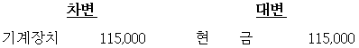
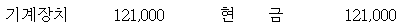
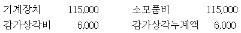
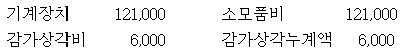
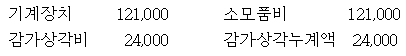
(정답률: 15%)
68. 과거사건의 결과로 현재의무가 존재하는 부채로서 충당부채의 인식 요건에 해당하는 것은?
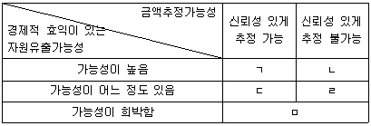
- ㄱ
- ㄴ
- ㄷ
- ㄹ
- ㅁ
(정답률: 27%)
69. 다음은 (주)한국의 20×1년도 재무제표 자료이다. (주)한국의 20×1년도 당기순이익이 ￦500,000일 때, 현금흐름표상 간접법으로 산출한 영업활동 현금흐름은?
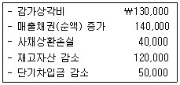
- ￦600,000
- ￦610,000
- ￦640,000
- ￦650,000
- ￦690,000
(정답률: 10%)
70. (주)한국은 정상영업주기를 상품매입 시점부터 판매 후 대금회수 시점까지의 기간으로 산정한다. 다음 자료를 이용하여 계산한 (주)한국의 정상영업주기는? (단, 매입과 매출은 전액 외상거래이고, 1년은 360일로 가정한다.)
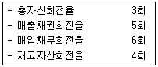
- 102일
- 120일
- 150일
- 162일
- 222일
(정답률: 19%)
71. (주)한국은 20×2년 9월 1일 구형 컴퓨터를 신형 컴퓨터로 교환하면서 현금 ￦1,130,000을 지급하였다. 구형 컴퓨터(취득원가 ￦1,520,000, 잔존가치 ￦20,000, 내용연수 5년, 정액법 상각)는 20×1년 1월 1일 취득하였으며, 교환시점의 공정가치는 ￦1,000,000이었다. 동 교환이 상업적 실질이 있는 경우 (주)한국이 인식할 처분손익은? (단, 원가모형을 적용하고, 감가상각은 월할상각한다.)
- ￦0
- ￦20,000 손실
- ￦20,000 이익
- ￦30,000 손실
- ￦30,000 이익
(정답률: 20%)
72. (주)한국의 20×1년 기초 자산총액은 ￦110,000이고, 기말 자산총액과 기말 부채총액은 각각 ￦150,000과 ￦60,000이다. 20×1년 중 현금배당 ￦10,000을 결의하고 지급하였으며, ￦25,000을 유상증자하였다. 20×1년도 당기순이익이 ￦30,000일 때, 기초 부채총액은?
- ￦60,000
- ￦65,000
- ￦70,000
- ￦75,000
- ￦80,000
(정답률: 15%)
73. (주)한국의 20×1년도 원가자료가 다음과 같을 때, 당기제품제조원가는? (단, 본사에서는 제품생산을 제외한 판매 및 일반관리 업무를 수행한다.)
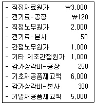
- ￦6,370
- ￦7,370
- ￦7,720
- ￦8,370
- ￦8,720
(정답률: 13%)
74. (주)한국의 최근 2개월간 생산량 및 제조원가가 다음과 같을 때, 6월의 기타제조원가는? (단, 5월과 6월의 단위당 변동원가와 고정원가총액은 동일하다.)
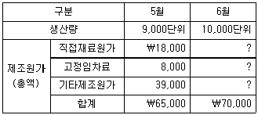
- ￦37,000
- ￦38,000
- ￦40,000
- ￦41,000
- ￦42,000
(정답률: 14%)
75. (주)한국의 최근 3개월간 매출액은 다음과 같다.
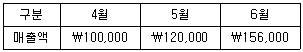
월별 매출액은 현금매출 60%와 외상매출 40%로 구성된다. 외상매출은 판매된 달에 40%, 판매된 다음 달에 58%가 현금으로 회수되고, 2%는 회수불능으로 처리된다. 6월의 현금유입액은?- ￦118,560
- ￦121,440
- ￦137,760
- ￦146,400
- ￦147,360
(정답률: 15%)
76. (주)한국은 단일제품을 생산하고 있다. 20×1년의 예산자료가 다음과 같을 때, 손익분기점 분석에 관한 설명으로 옳지 않은 것은?
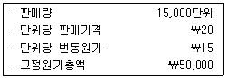
- 고정원가총액이 ￦10,000 증가하면 안전한계 판매량은 3,000단위가 된다.
- 손익분기점에서 총공헌이익은 고정원가총액인 ￦50,000과 동일하다.
- 판매량이 4,000단위 감소하면 총공헌이익은 ￦15,000 감소한다.
- 고정원가총액이 ￦10,000 감소하면 손익분기점 판매량은 8,000단위가 된다.
- 단위당 변동원가가 ￦5 감소하면 손익분기점 판매량은 5,000단위가 된다.
(정답률: 10%)
77. (주)한국은 표준원가계산제도를 사용하고 있으며, 3월의 직접노무원가 차이분석 결과는 다음과 같다.
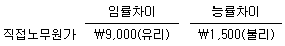
3월에 실제 직접노무시간은 18,000시간이고, 실제 임률은 시간당 ￦2.5이다. 3월의 실제 생산량에 허용된 표준직접노무시간은? (단, 재공품재고는 없다.)- 17,300시간
- 17,400시간
- 17,500시간
- 17,600시간
- 17,700시간
(정답률: 15%)
78. (주)한국은 제품A를 포함하여 여러 종류의 제품을 생산한다. 20×1년도 제품A에 관한 예산자료는 다음과 같다.
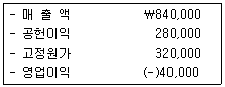
만일 제품A의 생산을 중단하면 제품A의 고정원가 ￦320,000 중 ￦190,000을 절감할 수 있다. 제품A의 생산 중단이 (주)한국의 20×1년도 예산영업이익에 미치는 영향은?- ￦90,000 증가
- ￦90,000 감소
- ￦130,000 증가
- ￦190,000 감소
- ￦190,000 증가
(정답률: 14%)
79. (주)한국은 단일제품을 생산한다. 20×1년의 단위당 판매가격은 ￦200, 고정원가총액은 ￦450,000, 손익분기점 판매량은 5,000단위이다. (주)한국이 20×1년에 목표이익 ￦135,000을 얻기 위해서는 몇 단위의 제품을 판매해야 하는가?
- 6,300단위
- 6,400단위
- 6,500단위
- 6,600단위
- 6,700단위
(정답률: 21%)
80. (주)한국은 20×1년 1월 1일에 설립되었다. 20×1년부터 20×4년까지 생산량 및 판매량은 다음과 같으며, 원가흐름 가정은 선입선출법이다.
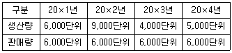
전부원가계산과 변동원가계산을 적용한 결과에 관한 설명으로 옳지 않은 것은? (단, 단위당 판매가격, 단위당 변동원가, 연간 고정원가총액은 매년 동일하다.)- 변동원가계산 하에서 20×1년과 20×2년의 영업이익은 동일하다.
- 변동원가계산에 의한 단위당 제품원가는 매년 동일하다.
- 20×1년부터 20×4년까지의 영업이익 합계는 전부원가계산과 변동원가계산에서 동일하다.
- 20×1년에는 전부원가계산 영업이익과 변동원가계산 영업이익이 동일하다.
- 전부원가계산 하에서 20×4년의 영업이익은 20×2년의 영업이익보다 크다.
(정답률: 12%)
3과목: 공동주택시설개론
81. 건축구조의 분류로 옳은 것은?
- 조적식구조 - 목구조
- 습식구조 - 철골구조
- 일체식구조 - 철골철근콘크리트구조
- 가구식구조 - 철근콘크리트구조
- 건식구조 - 벽돌구조
(정답률: 37%)
82. 건축물의 하중에 관한 설명으로 옳지 않은 것은?
- 지진하중은 지반종류의 영향을 받는다.
- 풍하중은 지형의 영향을 받는다.
- 고정하중은 구조체의 자중을 포함한다.
- 적설하중은 지붕형상의 영향을 받는다.
- 가동성 경량칸막이벽은 고정하중에 포함된다.
(정답률: 36%)
83. 기초에 관한 설명으로 옳지 않은 것은?
- 직접기초: 지지력이 확보되는 굳은 지반에 기초판을 설치하여 상부구조의 하중을 지지하는 기초
- 말뚝기초: 지지말뚝이나 마찰말뚝으로 상부구조의 하중을 지반에 전달하는 기초
- 연속기초: 건물전체의 하중을 두꺼운 하나의 기초판으로 지반에 전달하는 기초
- 복합기초: 2개 이상의 기둥으로부터의 하중을 하나의 기초판을 통해 지반에 전달하는 기초
- 독립기초: 독립된 기둥 1개의 하중을 1개의 기초판으로 지반에 전달하는 기초
(정답률: 38%)
84. 표준관입시험에 관한 설명으로 옳은 것은?
- 점성토 지반에서 실시하는 것을 원칙으로 한다.
- N값은 로드를 지반에 76cm 관입시키는 타격 횟수이다.
- N값이 10∼30인 모래지반은 조밀한 상태이다.
- 표준관입시험에 사용하는 추의 무게는 65.3kgf이다.
- 모래지반에서는 흐트러지지 않은 시료의 채취가 곤란하다.
(정답률: 28%)
85. 철근콘크리트구조에 관한 설명으로 옳지 않은 것은?
- 일반적으로 압축력은 콘크리트, 인장력은 철근이 부담한다.
- 압축강도 50MPa 이상의 콘크리트는 내구성과 내화성이 매우 우수하다.
- 콘크리트의 강한 알칼리성은 철근 부식 방지에 효과적이다.
- 철근과 콘크리트의 선팽창계수는 거의 같다.
- 철근량이 동일한 경우 굵은 철근보다 가는 철근을 배근하는 것이 균열제어에 유리하다.
(정답률: 30%)
86. 콘크리트 구조물에 발생하는 균열에 관한 설명으로 옳지 않은 것은?
- 보의 전단균열은 부재축에 경사방향으로 발생하는 균열이다.
- 침하균열은 배근된 철근 직경이 클수록 증가한다.
- 건조수축균열은 물시멘트비가 높을수록 증가한다.
- 소성수축균열은 풍속이 약할수록 증가한다.
- 온도균열은 콘크리트 내ㆍ외부의 온도차와 부재단면이 클수록 증가한다.
(정답률: 36%)
87. 철근콘크리트공사에 관한 설명으로 옳지 않은 것은?
- 콘크리트를 이어 칠 경우 콘크리트 표면에 나타난 레이턴스는 제거한 후 작업한다.
- 거푸집은 콘크리트 중량, 작업하중, 측압 등에 견딜 수 있어야 한다.
- 철근의 피복두께를 유지하기 위해 긴결재를 사용한다.
- 슬럼프시험은 워커빌리티 검사방법의 일종이다.
- 동결융해작용을 받지 않는 콘크리트 구조물에 사용되는 잔골재는 내구성(안정성)시험을 하지 않을 수 있다.
(정답률: 30%)
88. 철골구조공사에 관한 설명으로 옳지 않은 것은?
- 부재의 길이가 길고 두께가 얇아 좌굴이 발생하기 쉽다.
- H형강 보에서 플랜지의 국부좌굴 방지를 위해 스티프너를 사용한다.
- 아크용접을 할 때 비드(bead) 끝에 오목하게 패인 결함을 크레이터(crater)라 한다.
- 밀시트(mill sheet)는 강재의 품질보증서로 제조번호, 강재번호, 화학성분, 기계적 성질 등이 기록되어 있다.
- 공장제작 및 현장조립으로 공사의 표준화를 도모할 수 있다.
(정답률: 35%)
89. 철골구조의 고장력볼트에 관한 설명으로 옳지 않은 것은?
- 토크-전단형(T/S) 고장력볼트는 너트 측에만 1개의 와셔를 사용한다.
- 볼트는 1차 조임 후 1일 정도의 안정화를 거친 다음 본조임하는 것을 원칙으로 한다.
- 볼트는 원칙적으로 강우 및 결로 등 습한 상태에서 본조임해서는 안 된다.
- 볼트 끼우기 중 나사부분과 볼트머리는 손상되지 않도록 보호한다.
- 볼트 조임 및 검사용 토크렌치와 축력계의 정밀도는 ±3% 오차범위 이내가 되도록 한다.
(정답률: 33%)
90. 조적공사에 관한 설명으로 옳지 않은 것은?
- 벽돌의 하루 쌓기높이는 1.2m(18켜 정도)를 표준으로 하고 최대 1.8m(27켜 정도) 이내로 한다.
- 벽돌의 치장줄눈 깊이는 6mm로 한다.
- 블록쌓기 줄눈너비는 가로 및 세로 각각 10mm를 표준으로 한다.
- ALC블록의 하루 쌓기높이는 1.8m를 표준으로 하고 최대 2.4m 이내로 한다.
- 블록은 살두께가 큰 편이 위로 가게 쌓는다.
(정답률: 35%)
91. 미장공사에 관한 설명으로 옳지 않은 것을 모두 고른 것은?
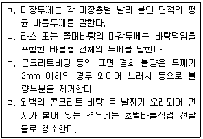
- ㄱ
- ㄴ
- ㄱ, ㄹ
- ㄴ, ㄷ
- ㄷ, ㄹ
(정답률: 24%)
92. 타일공사에 관한 설명으로 옳지 않은 것은?
- 치장줄눈파기는 타일을 붙이고 3시간이 경과한 후 실시한다.
- 타일의 접착력 시험결과 인장 부착강도는 0.39MPa이상이어야 한다.
- 바탕 모르타르 바닥면은 물고임이 없도록 구배를 유지하되 1/100을 넘지 않도록 한다.
- 타일의 탈락(박락)은 떠붙임 공법에서 가장 많이 발생하며 모르타르의 시간경과로 인한 강도저하가 주요 원인이다.
- 내장타일의 크기가 대형화되면서 발생하는 타일의 옆면 파손은 벽체 모서리 등에 신축조정줄눈을 설치하여 방지할 수 있다.
(정답률: 25%)
93. 저절로 문은 닫히지만 15cm 정도는 열려있도록 하기 위해 사용되는 창호철물은?
- 레버토리 힌지(lavatory hinge)
- 도어 클로저(door closer)
- 크레센트(crescent)
- 실린더 자물쇠(cylinder lock)
- 피봇 힌지(pivot hinge)
(정답률: 36%)
94. 유리공사와 관련된 용어의 설명으로 옳지 않은 것은?
- 구조 개스킷: 클로로프렌 고무 등으로 압출성형에 의해 제조되어 유리의 보호 및 지지기능과 수밀기능을 지닌 개스킷
- 그레이징 개스킷: 염화비닐 등으로 압출성형에 의해 제조된 유리끼움용 개스킷
- 로이유리(low-e glass): 은소재 도막으로 코팅하여 방사율과 열관류율을 낮추고, 가시광선 투과율을 높인 유리
- 핀홀(pin hole): 유리를 프레임에 고정하기 위해 유리와 프레임에 설치하는 작은 구멍
- 클린 컷: 유리의 절단면에 구멍 흠집, 단면결손, 경사단면 등이 없도록 절단된 상태
(정답률: 28%)
95. 건축물의 방수공법에 관한 설명으로 옳지 않은 것은?
- 아스팔트방수: 아스팔트 펠트 및 루핑 등을 용융아스팔트로 여러 겹 적층하여 방수층을 형성하는 공법이다.
- 합성고분자 시트방수: 신장력과 내후성, 접착성이 우수하며, 여러 겹 적층하여 방수층을 형성하는 공법이다.
- 아크릴 고무계 도막방수: 방수제에 포함된 수분의 증발 및 건조에 의해 도막을 형성하는 공법이다.
- 시트 도막 복합방수: 기존 시트 또는 도막을 이용한 단층 방수공법의 단점을 보완한 복층 방수공법이다.
- 시멘트액체방수: 시공이 용이하며 경제적이지만 방수층 자체에 균열이 생기기 쉽기 때문에 건조수축이 심한 노출환경에서는 사용을 피한다.
(정답률: 28%)
96. 방습공사에 사용되는 박판시트계 방습자재가 아닌 것은?
- 폴리에틸렌 방습층
- 종이 적층 방습자재
- 펠트, 아스팔트 필름 방습층
- 금속박과 종이로 된 방습자재
- 플라스틱 금속박 방습자재
(정답률: 26%)
97. 도장공사에 관한 설명으로 옳지 않은 것은?
- 불투명한 도장일 때 하도, 중도, 상도의 색깔은 가능한 달리한다.
- 스프레이건은 뿜칠면에 직각으로 평행운행하며 뿜칠너비의 1/3 정도 겹치도록 시공한다.
- 롤러칠은 붓칠보다 속도가 빠르나 일정한 도막두께를 유지하기 어렵다.
- 징크로메이트 도료는 철재 녹막이용으로 철재의 내구연한을 증대시킨다.
- 처음 1회 방청도장은 가공장소에서 조립 전 도장을 원칙으로 한다.
(정답률: 25%)
98. 지붕 물매기준으로 옳지 않은 것은?
- 설계도면에 별도로 지정하지 않은 경우: 1/50 이상
- 금속 기와 지붕: 1/2 이상
- 아스팔트 싱글 지붕(강풍 이외 지역): 1/3 이상
- 일반적인 금속판 및 금속패널 지붕: 1/4 이상
- 합성고분자 시트 지붕: 1/50 이상
(정답률: 28%)
99. 표준품셈에서 재료의 할증률로 옳은 것은?
- 이형철근 - 3%
- 시멘트벽돌 - 3%
- 목재(각재) - 3%
- 고장력볼트 - 5%
- 유리 - 5%
(정답률: 32%)
100. 길이 12.0m, 높이 3.0m인 벽체를 1.5B(내부 1.0B 시멘트벽돌, 외부 0.5B 붉은벽돌)로 쌓을 때 외부에 쌓는 0.5B 붉은벽돌(190mm×90mm×57mm)의 소요량은? (단, 줄눈은 10mm로 한다.)
- 2700매
- 2781매
- 2800매
- 2888매
- 2991매
(정답률: 31%)
101. 배관에 흐르는 유체의 마찰손실수두에 관한 설명으로 옳은 것은?
- 관의 길이에 반비례한다.
- 중력가속도에 비례한다.
- 유속의 제곱에 비례한다.
- 관의 내경이 클수록 커진다.
- 관의 마찰(손실)계수가 클수록 작아진다.
(정답률: 32%)
102. 겨울철 벽체의 표면결로 방지대책으로 옳지 않은 것은?
- 실내에서 발생하는 수증기량을 줄인다.
- 환기를 통해 실내의 절대습도를 낮춘다.
- 벽체의 단열강화를 통해 실내 측 표면온도를 높인다.
- 실내 측 표면온도를 주변공기의 노점온도보다 낮춘다.
- 난방기기를 이용하여 벽체의 실내 측 표면온도를 높인다.
(정답률: 26%)
103. 급수 배관의 관경 결정법으로 옳은 것을 모두 고른 것은?
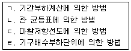
- ㄱ, ㄴ
- ㄱ, ㄷ
- ㄴ, ㄷ
- ㄴ, ㄹ
- ㄷ, ㄹ
(정답률: 22%)
104. 급수 설비에서 펌프에 관한 설명으로 옳은 것은?
- 공동현상을 방지하기 위해 흡입양정을 낮춘다.
- 펌프의 전양정은 회전수에 반비례한다.
- 펌프의 양수량은 회전수의 제곱에 비례한다.
- 동일 특성을 갖는 펌프를 직렬로 연결하면 유량은 2배로 증가한다.
- 동일 특성을 갖는 펌프를 병렬로 연결하면 양정은 2배로 증가한다.
(정답률: 32%)
1⑤. 급탕 배관에 관한 설명으로 옳지 않은 것은?
- 2개 이상의 엘보를 사용하여 신축을 흡수하는 이음은 스위블 조인트이다.
- 배관의 신축을 고려하여 배관이 벽이나 바닥을 관통하는 경우 슬리브를 사용한다.
- ㄷ자형의 배관 시에는 배관 도중에 공기의 정체를 방지하기 위하여 에어챔버를 설치한다.
- 동일 재질의 관을 사용하였을 경우 급탕 배관은 급수 배관보다 관의 부식이 발생하기 쉽다.
- 배관 방법에서 복관식은 단관식 배관법보다 뜨거운 물이 빨리 나온다.
(정답률: 20%)
106. 150명이 거주하는 공동주택에서 유출수의 BOD 농도는 60ppm, BOD 제거율은 60%이다. 이 때 오물정화조의 유입수 BOD 농도(ppm)는?
- 96
- 120
- 150
- 180
- 192
(정답률: 27%)
107. 트랩의 봉수파괴 원인 중 건물 상층부의 배수 수직관으로부터 일시에 많은 양의 물이 흐를 때, 이 물이 피스톤 작용을 일으켜 하류 또는 하층 기구의 트랩 봉수를 공기의 압축에 의해 실내 측으로 역류시키는 작용은?
- 증발 작용
- 분출 작용
- 수격 작용
- 유인 사이펀 작용
- 자기 사이펀 작용
(정답률: 31%)
108. 위생기구 설비에 관한 설명으로 옳은 것은?
- 위생기구로서 도기는 다른 재질들에 비해 흡수성이 큰 장점을 갖고 있어 가장 많이 사용되고 있다.
- 세정 밸브식과 세정 탱크식의 대변기에서 급수관의 최소 관경은 15mm로 동일하다.
- 세정 탱크식 대변기에서 세정 시 소음은 로(low) 탱크식이 하이(high) 탱크식보다 크다.
- 세정 밸브식 대변기의 최저필요압력은 세면기 수전의 최저필요압력보다 크다.
- 세정 탱크식 대변기에는 역류방지를 위해 진공방지기를 설치해야 한다.
(정답률: 27%)
109. 습공기선도상에서 습공기의 성질에 관한 설명으로 옳은 것은?
- 습공기선도를 사용하면 수증기분압, 유효온도, 현열비 등을 알 수 있다.
- 상대습도 50%인 습공기의 건구온도는 습구온도보다 낮다.
- 상대습도 100%인 습공기의 건구온도와 노점온도는 같다.
- 건구온도의 변화 없이 절대습도만 상승시키면 습구온도는 낮아진다.
- 절대습도의 변화 없이 건구온도만 상승시키면 노점온도는 낮아진다.
(정답률: 27%)
110. 아파트의 지하층에 설치하여야 하는 피난기구로 옳은 것은?
- 피난교
- 구조대
- 완강기
- 피난용 트랩
- 승강식피난기
(정답률: 30%)
111. 도시가스설비공사에 관한 설명으로 옳은 것은?
- 가스계량기와 화기 사이에 유지하여야 하는 거리는 1.5m 이상이어야 한다.
- 가스계량기와 전기계량기 및 전기개폐기와의 거리는 30cm 이상을 유지하여야 한다.
- 입상관의 밸브는 바닥으로부터 1m 이상 2m 이내에 설치하여야 한다.
- 지상배관은 부식방지 도장 후 표면 색상을 황색으로 도색하고, 최고사용압력이 저압인 지하매설배관은 황색으로 하여야 한다.
- 가스계량기의 설치 높이는 바닥으로부터 1m 이상 2m 이내에 수직ㆍ수평으로 설치하여야 한다.
(정답률: 28%)
112. 보일러의 용량을 결정하는 출력에 관한 설명으로 옳은 것은?
- 상용출력 = 난방출력 + 급탕부하 + 축열부하
- 상용출력 = 난방부하 + 급탕부하 + 배관(손실)부하
- 정격출력 = 상용출력 + 축열부하
- 정격출력 = 상용출력 + 장치부하
- 정격출력 = 난방부하 + 급탕부하 + 예열부하
(정답률: 30%)
113. 공동주택 전기실에 역률개선용 콘덴서를 부하와 병렬로 설치함으로서 얻어지는 효과로 옳지 않은 것은?
- 전기요금 경감
- 전압강하 경감
- 설비용량의 여유분 증가
- 돌입전류 및 이상전압 억제
- 배전선 및 변압기의 손실 경감
(정답률: 34%)
114. 전기설비에 관한 설명으로 옳지 않은 것은?
- 1주기는 60Hz의 경우 1/60초이다.
- 1W는 1초 동안에 1J의 일을 하는 일률이다.
- 30Ω의 저항 3개를 병렬로 접속하면 합성저항은 10Ω이다.
- 고유저항이 일정할 경우 전선의 굵기와 길이를 각각 2배로 하면 저항은 2배가 된다.
- 저항이 일정할 경우 임의의 폐회로에서 전압을 2배로 하면 저항에 흐르는 전류는 2배가 된다.
(정답률: 38%)
115. 전기설비기술기준의 판단기준상 접지공사 시 접지선의 최소 굵기로 옳은 것은?
- 제1종 접지공사 : 직경 2.6mm 이상의 연동선
- 제1종 접지공사 : 공칭단면적 8mm2이상의 연동선
- 제2종 접지공사 : 공칭단면적 12mm2이상의 연동선
- 제3종 접지공사 : 공칭단면적 6mm2이상의 연동선
- 특별 제3종 접지공사 : 공칭단면적 2.5mm2이상의 연동선
(정답률: 32%)
116. 전기설비, 피뢰설비 및 통신설비 등의 접지극을 하나로 하는 통합접지공사 시 낙뢰 등에 의한 과전압으로부터 전기설비를 보호하기 위해 설치하여야 하는 기계ㆍ기구는?
- 단로기(DS)
- 지락과전류보호계전기(OCGR)
- 과전류보호계전기(OCR)
- 서지보호장치(SPD)
- 자동고장구분개폐기(ASS)
(정답률: 29%)
117. 국선배선반과 초고속통신망장비 등 각종 구내통신용 설비를 설치하기 위한 공간은?
- TPS실
- MDF실
- 방재실
- 단지서버실
- 세대통합관리반
(정답률: 29%)
118. 화재안전기준상 누전경보기 설치에 관한 설명으로 옳지 않은 것은?
- 경계전로가 분기되지 아니한 정격전류가 60A를 초과하는 전로에 있어서는 2급 누전경보기를 설치할 것
- 누전경보기 전원은 분전반으로부터 전용회로로 하고 각 극에 개폐기 및 15A 이하의 과전류차단기를 설치할 것
- 전원을 분기할 때는 다른 차단기에 따라 전원이 차단되지 아니하도록 할 것
- 전원의 개폐기에는 누전경보기용임을 표기한 표지를 할 것
- 수신부의 음향 장치는 수위실 등 상시 사람이 근무하는 장소에 설치하여야 하며, 그 음량 및 음색은 다른 기기의 소음 등과 명확히 구별할 수 있는 것으로 할 것
(정답률: 32%)
119. 150세대인 신축공동주택에 기계환기설비를 설치하고자 한다. 설치기준에 관한 설명으로 옳지 않은 것은?
- 적정 단계의 필요 환기량은 세대를 시간당 0.5회로 환기할 수 있는 풍량을 확보하여야 한다.
- 기계환기설비의 환기기준은 시간당 실내공기 교환횟수로 표시하여야 한다.
- 기계환기설비는 주방 가스대 위의 공기배출장치, 화장실의 공기배출 송풍기 등 급속 환기 설비와 함께 설치할 수 있다.
- 기계환기설비의 각 부분의 재료는 충분한 내구성 및 강도를 유지하여 작동되는 동안 구조 및 성능에 변형이 없도록 하여야 한다.
- 하나의 기계환기설비로 세대 내 2 이상의 실에 바깥공기를 공급할 경우의 필요 환기량은 각 실에 필요한 환기량의 평균 이상이 되도록 하여야 한다.
(정답률: 24%)
120. 전유부분 홈네트워크 설비의 설치기준에 관한 설명으로 옳지 않은 것은?
- 월패드에서 원격제어 되는 조명제어기, 난방제어기 등 모든 원격제어기기에는 수동으로 조작하는 스위치를 설치하여야 한다.
- 가스감지기는 사용하는 가스가 LNG인 경우에는 천장 쪽에 설치하여야 한다.
- 개폐감지기는 현관출입문 상단에 설치하며 원격제어용기기와 통합배선 하여야 한다.
- 세대 단자함은 500mm×400mm×80mm(깊이) 크기로 설치할 것을 권장한다.
- 취사용 가스밸브는 원격제어가 가능한 가스밸브제어기를 설치하여야 한다.
(정답률: 25%)